Uma foto por dia, explicada

Colunas de gás e poeira onde nascem estrelas. A cerca de 6.500 anos-luz, na Nebulosa da Águia.
Imagem: NASA, ESA, CSA, STScI

A borda de uma cavidade de gás aberta por estrelas. A cerca de 7.600 anos-luz, na Nebulosa de Carina.
Imagem: NASA, ESA, CSA, STScI

Uma galáxia espiral vista de lado, como um chapéu. 50 mil anos-luz de largura, a 30 milhões de a.l.
Imagem: NASA/ESA, Hubble Heritage (STScI/AURA)
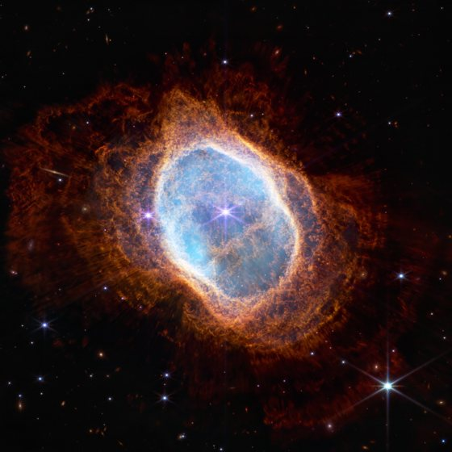
As camadas de gás são o que a estrela soltou ao morrer. Fica a cerca de 2.500 anos-luz, na constelação de Vela.
Imagem: NASA, ESA, CSA, STScI

As luzes nos polos são auroras, como as da Terra. A Grande Mancha Vermelha aparece branca nessa luz.
Imagem: NASA, ESA, Jupiter ERS Team; J. Schmidt

A 'cabeça' é poeira escura tapando o gás brilhante atrás. Fica a cerca de 1.375 anos-luz, na constelação de Órion.
Imagem: ESA/Euclid/Euclid Consortium/NASA

Quatro estão perto umas das outras e se puxam. A quinta só parece junto: está bem mais perto de nós.
Imagem: NASA, ESA, CSA, STScI
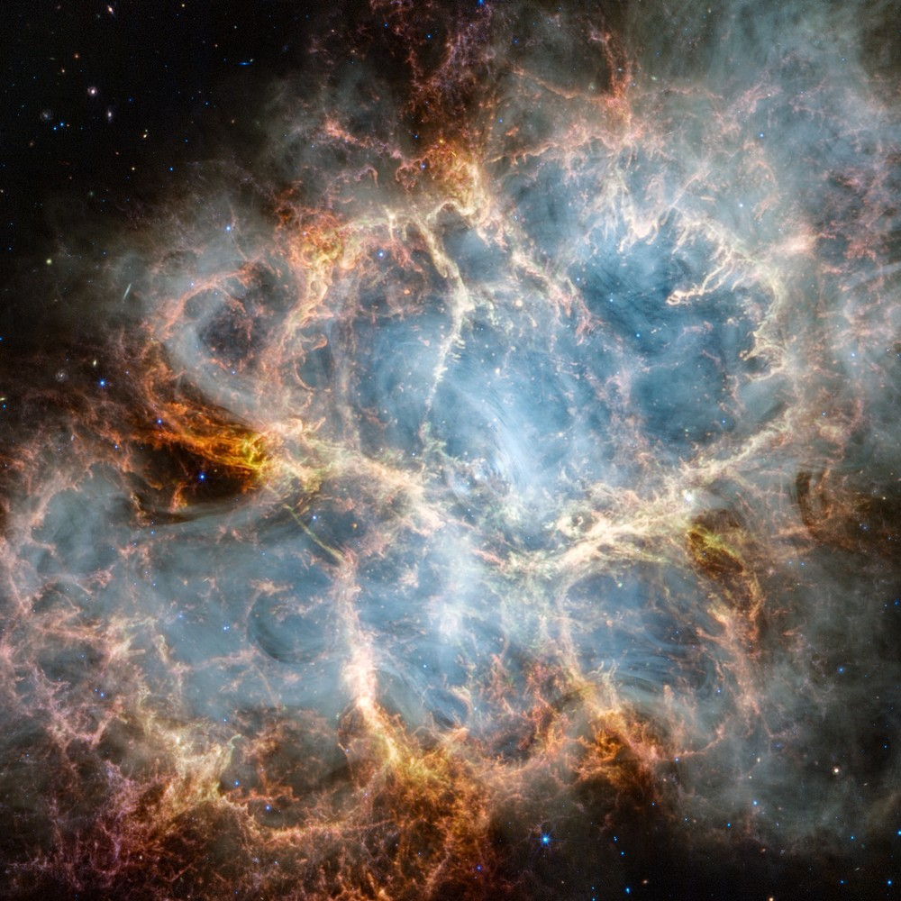
O que restou de uma estrela que explodiu em 1054. No centro, um pulsar: uma estrela de nêutrons.
Imagem: NASA, ESA, CSA, STScI, T. Temim

Gás expelido por uma estrela parecida com o Sol. A cerca de 700 anos-luz, em Aquário.
Imagem: ESO
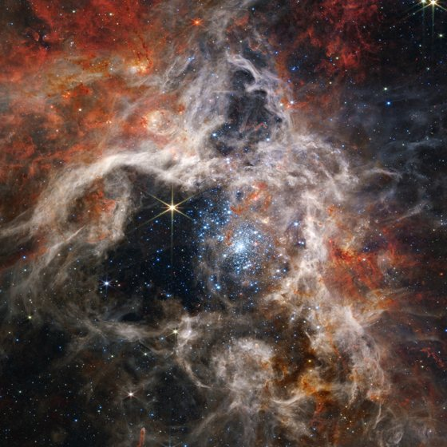
O maior berçário de estrelas do Grupo Local. A 161 mil anos-luz, na Grande Nuvem de Magalhães.
Imagem: NASA, ESA, CSA, STScI

Anéis de poeira ao redor de uma estrela jovem. As falhas escuras sugerem planetas em formação.
Imagem: ALMA (ESO/NAOJ/NRAO)

Dois anéis criados por uma colisão de galáxias. A cerca de 500 milhões de anos-luz.
Imagem: NASA, ESA, CSA, STScI
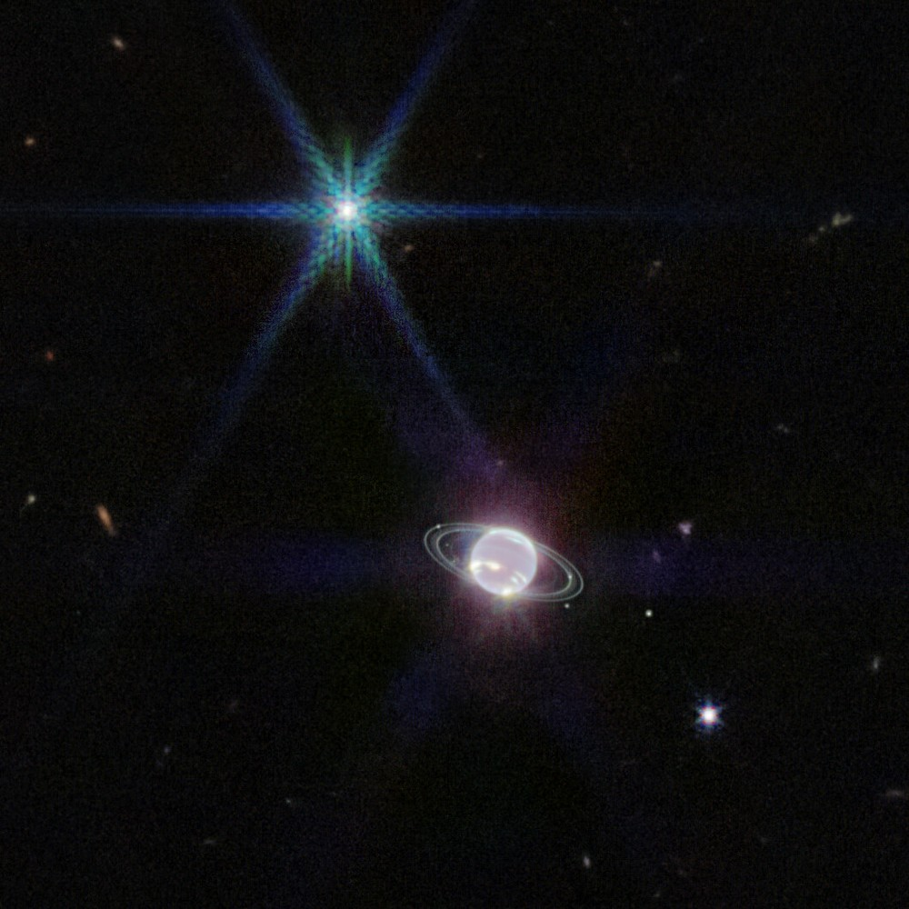
Anéis vistos com nitidez inédita desde 1989. O ponto mais brilhante é a lua Tritão.
Imagem: NASA, ESA, CSA, STScI

Asas de gás lançadas por uma estrela no fim da vida. Mais de 2 anos-luz de uma ponta à outra.
Imagem: NASA, ESA, Hubble SM4 ERO Team

Primeira imagem profunda do James Webb. Os arcos são galáxias distorcidas pela gravidade.
Imagem: NASA, ESA, CSA, STScI
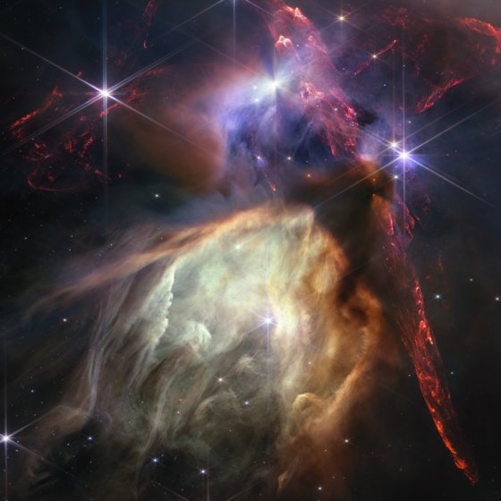
Um dos lugares mais próximos onde nascem estrelas. Os traços vermelhos são jatos de estrelas jovens.
Imagem: NASA, ESA, CSA, STScI, K. Pontoppidan

A casca de gás de uma estrela que explodiu. 10 anos-luz de largura, a 11 mil anos-luz.
Imagem: NASA, ESA, CSA, STScI, D. Milisavljevic
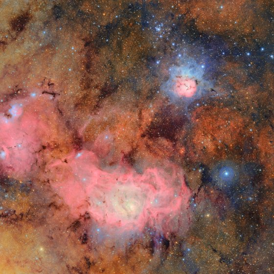
Duas nuvens onde nascem estrelas. 678 exposições em 7,2 horas de observação.
Imagem: NSF–DOE Vera C. Rubin Observatory
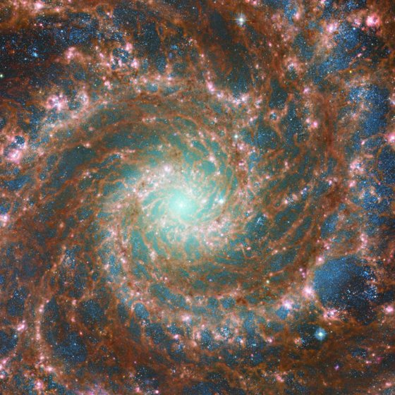
Uma espiral vista de cima, em visível e infravermelho. A cerca de 32 milhões de anos-luz.
Imagem: ESA/Webb, NASA & CSA; ESA/Hubble
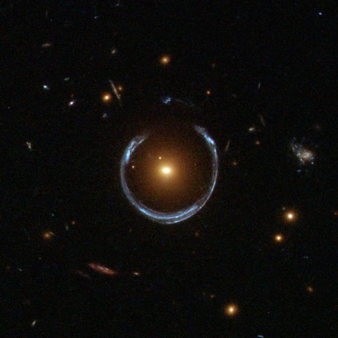
O anel azul é uma galáxia distante, deformada. A gravidade da galáxia vermelha age como lente.
Imagem: ESA/Hubble & NASA

Gás expelido por uma estrela no fim da vida. Cerca de 20 mil bolinhas densas de hidrogênio.
Imagem: ESA/Webb, NASA, CSA, M. Barlow et al.
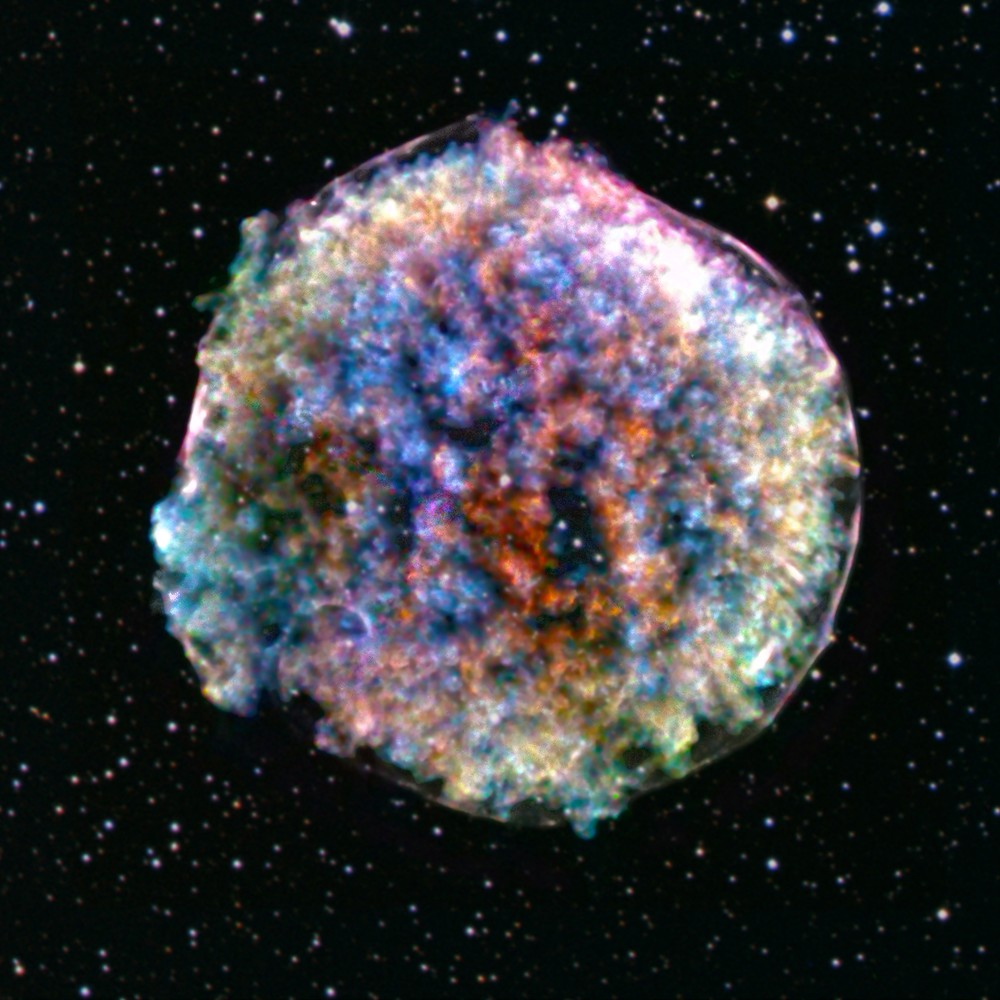
Destroços da explosão, vistos em raios X. Hoje têm cerca de 45 anos-luz de largura.
Imagem: NASA/CXC/RIKEN & GSFC/T. Sato et al.; DSS

Mais de 3 mil estrelas numa nuvem de gás e poeira. A cerca de 1.500 anos-luz da Terra.
Imagem: NASA, ESA, M. Robberto (STScI/ESA)

Anéis de gelo e poeira em órbita do planeta. A 1,36 bilhão de km da Terra no dia da foto.
Imagem: NASA, ESA, A. Simon, M.H. Wong

Uma estrela de 100 mil anos, escondida no centro. O traço escuro é o disco onde nascem planetas.
Imagem: NASA, ESA, CSA, STScI, J. DePasquale

Dois braços espirais repletos de estrelas jovens. A cerca de 25 milhões de anos-luz.
Imagem: NASA, ESA, S. Beckwith, Hubble Heritage

Poeira iluminada por uma estrela gigante vermelha. A cerca de 1.200 anos-luz, em Carina.
Imagem: Int. Gemini Obs./NOIRLab/NSF/AURA
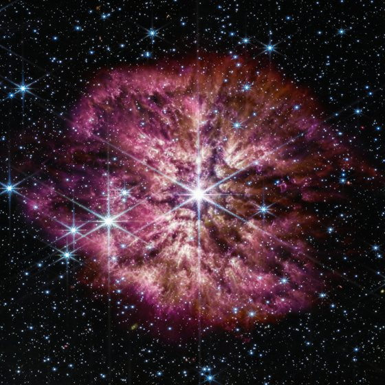
Uma estrela gigante soltando as próprias camadas. Fica a cerca de 15 mil anos-luz.
Imagem: NASA, ESA, CSA, STScI
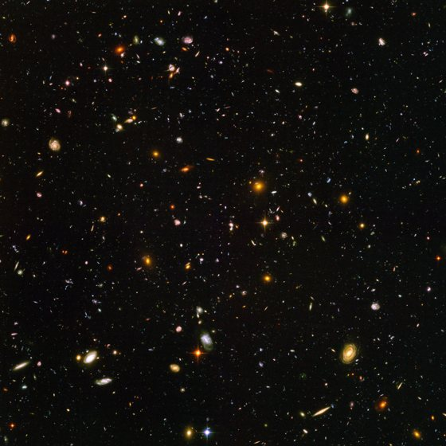
Quase 10 mil galáxias num trecho escuro do céu. 800 exposições, 11,3 dias de luz acumulada.
Imagem: NASA, ESA, S. Beckwith, HUDF Team
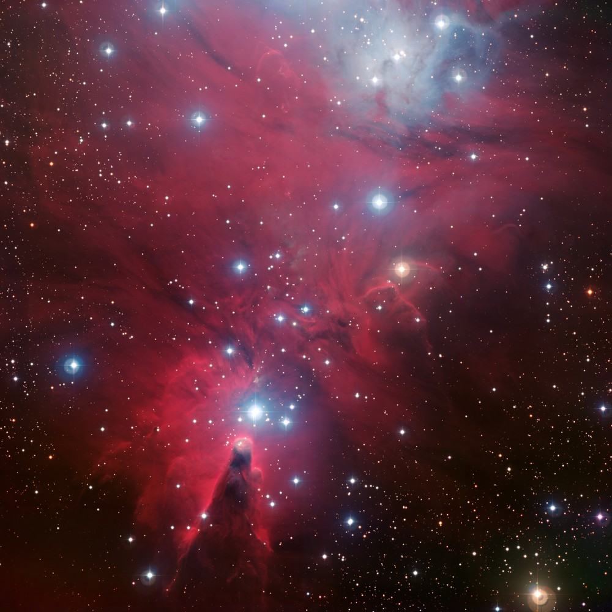
Estrelas jovens azuis e gás que brilha em vermelho. Embaixo, o triângulo escuro da Nebulosa do Cone.
Imagem: ESO